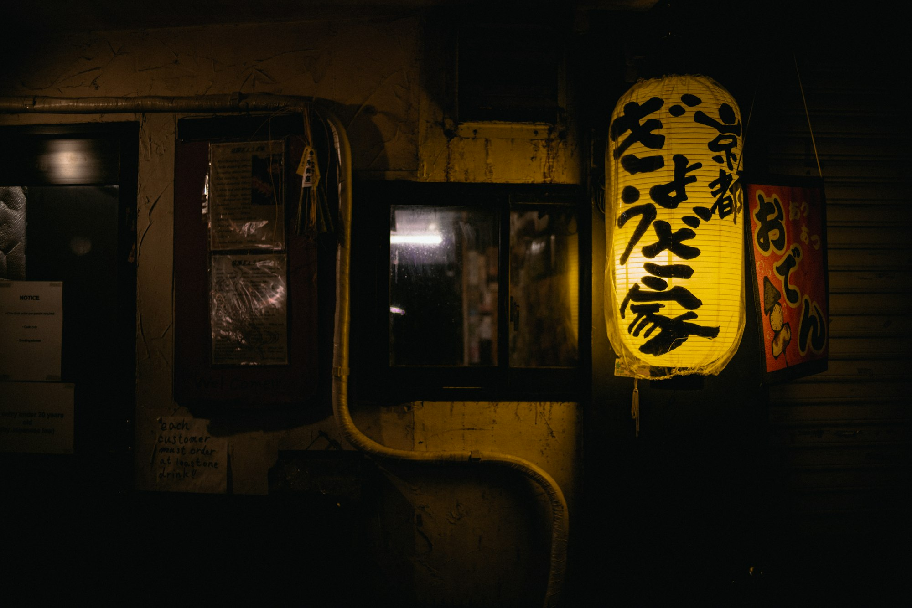

Bezorgen
Zin in Niko op de bank? Bestel je favorieten van de kaart via Thuisbezorgd.
Bestel via ThuisbezorgdNIKO
Van een bento bij de lunch tot karaage en een koud biertje laat op de avond. Elke dag open vanaf 11:00.

Kleine gerechten om te delen, hoofdgerechten, rijstkommen en bento. Elk gerecht staat erbij in het Nederlands, Engels en Japans.
Hapjes en snacks bij je drankje
自家製胡麻ドレッシングのサラダ
Rucola, spitskool, broccoli en wortels met een zelfgemaakte geroosterde sesamdressing
Rucola, shredded cabbage, broccoli and carrots with homemade roasted sesame dressing
えだまめ
Sojaboontjes (vegan)
Young green soybeans
ブッラータの和風カプレーゼ (鰹節あり/なし)
Japanse interpretatie van een Italiaanse klassieker met tomaat, shiso, burrata en bonito vlokken
Japanese interpretation of an Italian classic with tomato, shiso, burrata and bonito flakes
ビッターボーレン
鰻ざく
Paling, komkommer en wakame met een zoete umami dressing
Eel, cucumber and wakame seaweed with sweet umami vinegar
生牡蠣
Verse oester met ponzu gelei, forelkuit en yuzu-kosho
Fresh oyster with ponzu jelly, trout roe and yuzu-kosho
鶏のからあげ
Krokant gefrituurde kip geserveerd met zelfgemaakte tartaarsaus en citroen (extra tartaarsaus 1,50)
Crispy fried chicken served with homemade tartar sauce and lemon (+ extra tartar sauce 1.50)
れんこんとさつまいもの甘酢
Gefrituurde lotuswortel en zoete aardappel met een zoetzure saus (vegan)
Fried lotus roots and sweet potato with sweet and sour sauce
竹輪のチーズ磯辺揚げ
Tempura van viskoekje gevuld met kaas en gedroogd zeewier
Fish cake tempura filled with dried seaweed flakes and cheese
唐揚げ
Gefrituurde kip met Japanse tartaarsaus en citroen
Crispy fried chicken. Crispy on the outside, juicy and tender on the inside. Best with beer!
なめたけいくらおろし
Daikon met aangemaakte enoki paddenstoelen en forelkuit
Grated daikon with flavoured enoki mushrooms and trout roe. Best with sake!
なめたけやっこ
In blokjes gesneden tofu, aangemaakte enoki paddenstoelen, lente-ui, gember en bonito vlokken (vegan mogelijk)
Dice cut tofu, flavoured enoki mushrooms, spring onion, ginger and bonito flakes (vegan available)
なすの田楽
Gefrituurde aubergine met miso (vegan)
Fried aubergine with miso
鱸のカルパッチョ
Zeebaars gemarineerd in sake en kombu. Geserveerd met ponzu gelei, wasabiblad en forelkaviaar
Sea bass marinated in sake and kombu. Served with ponzu jelly, wasabi leaves and trout roe
Hoofdgerechten, geserveerd zonder rijst (rijst los erbij: zie Soep & extra’s)
牛のたたき
Ossenhaas met zoete uiensaus
Tenderloin with homemade sweet onion soy sauce
炙りチャーシュー
Langzaam gegaard buikspek met gemarineerde taugé en gerookte kwarteleitjes
Slow cooked pork belly with marinated tauge and smoked quail eggs
鶏の照り焼き
Kippendijen met zelfgemaakte teriyakisaus (+2,00 zachtgekookt ei, let op: echt zachtgekookt)
Chicken with homemade teriyaki sauce (+2.00 soft boiled egg)
とんかつ
Japanse varkenshaasschnitzel met Japanse worcestershiresaus en mosterd
Panko-pork fillet with Japanese Worcestershire sauce and mustard
エビフライ
Gefrituurde grote garnalen met Japanse worcestershiresaus
Panko-prawns with homemade tartar sauce and Japanese Worcestershire sauce
鱸の昆布締め塩焼き
Roergebakken zeebaars gemarineerd in kombu, geserveerd met ponzu
Stir fried sea bass marinated in kombu seaweed served with ponzu
鮭の塩麹焼き
Roergebakken zalm gemarineerd in gezouten gefermenteerde rijst, geserveerd met ponzu
Stir fried salmon marinated in salted rice malt served with ponzu
豆腐ステーキ
Gebraden tofusteak met onze speciale zoete uiensaus
Pan seared tofu steak with our special sweet onion sauce
ポルトベッロの生姜焼き
Roergebakken portobello met gembersaus
Stir fried portobello mushroom with ginger sauce
Rijstkommen
カツ丼
Japanse varkenshaasschnitzel met omelet op rijst
Tonkatsu with omelet on rice
ソースカツ丼
Japanse varkenshaasschnitzel in speciale saus met mosterd en dun gesneden spitskool op rijst
Japanese panko pork filet dipped in special sauce with mustard and thinly sliced cabbage on rice
エビカツ丼
In panko gefrituurde garnalen met omelet op rijst
Panko-prawn with omelet on rice
親子丼
Kip met omelet op rijst
Chicken with omelet on rice
鶏の照り焼き丼
Roergebakken kip in teriyakisaus op rijst (+2,00 zachtgekookt ei, let op: echt zachtgekookt)
Stir fried chicken in teriyaki sauce on rice (+2.00 soft boiled egg)
炙りチャーシュー丼
Langzaam gegaard buikspek met gemarineerde taugé en gerookte kwarteleitjes op rijst
Slow cooked pork belly with marinated tauge and smoked quail eggs on rice
ビーフステーキ丼
Ossenhaas met zelfgemaakte saus en kleine salade op rijst
Beef tataki with homemade sauce and small salad on rice
鰻丼
Paling en sanshopeper op rijst
Eel, sansho pepper on rice
かき揚げ丼
Gefrituurde ui, zoete aardappel, wortel en garnalen op rijst
Tempura of shredded onion, sweet potato and shrimp on rice
野菜のかき揚げ丼
Groentetempura op rijst
Shredded veggie tempura on rice
豆腐ステーキ丼
Gebraden tofu, salade en onze speciale zoete uiensaus op rijst
Tofu steak, salad and our special sweet onion sauce on rice
Traditionele Japanse lunchdoos, geserveerd tot 16:00. Met een kleine salade, bijgerechten, Japans zuur en rijst.
スズキの昆布締め塩焼き弁当
Roergebakken zeebaars gemarineerd in kombu, geserveerd met ponzu
Stir fried sea bass marinated in kombu seaweed, served with ponzu
鮭の塩麹焼き弁当
Roergebakken zalm gemarineerd in gezouten rijst, geserveerd met ponzu
Stir fried salmon marinated with salted rice malt, served with ponzu
エビフライ弁当
Gefrituurde panko-garnalen met Japanse worcestersaus en zelfgemaakte tartaarsaus
Panko-prawn with Japanese Worcester sauce and homemade tartar sauce
とんかつ(ヒレカツ)弁当
Japanse varkenshaasschnitzel met zelfgemaakte worcestersaus
Tonkatsu with Japanese Worcester sauce
からあげ弁当
Krokant gefrituurde kip met zelfgemaakte tartaarsaus
Crispy fried chicken with homemade tartar sauce
鶏の照り焼き弁当
Roergebakken kip en prei in teriyakisaus
Stir fried chicken and leeks with homemade teriyaki sauce
豆腐ステーキ弁当
Tofusteak met onze speciale steaksaus
Tofu steak with our special steak sauce
ビーフステーキ弁当
Ossenhaas met onze speciale zoete uiensaus
Tenderloin with our special sweet onion sauce
Geserveerd tot 16:00, op een sandwich met dun gesneden spitskool en speciale saus
カツサンド (豚、鶏)
Japanse schnitzel van varkenshaas of kip
Japanese schnitzel of pork filet or chicken
なす
卵サンド
Japanse eiersalade
Japanese egg salad
ごはん
お味噌汁
Misosoep van onze eigen dashi, met tofu, wakame zeewier en lente-ui
Miso soup made from our dashi with tofu, wakame seaweed and spring onions
お漬物
2 soorten Japans zuur
2 kinds of Japanese pickles
温泉卵
Zachtgekookt ei (let op: echt zachtgekookt)
明太子
Pittige forelkuit
Spicy cod fish roe
とろける抹茶プリン
Matchapudding met karamel
抹茶もちアイス
Matcha mochi-ijs
ガトーショコラ
Chocoladetaart met vanille-ijs
Chocolate cake with ice cream
Bento en sando’s serveren we tot 16:00. Vragen over allergenen? Bel ons gerust even.
Bestel via Thuisbezorgd
Niko is net zo goed een bar als een keuken. Schuif aan voor een bier of een cocktail en bestel er een paar otsumami bij: edamame, karaage of een oester.
Bekijk de otsumamiNiko aan huis bezorgd, of een kom udon bij onze zusterzaak in de Prinsestraat.
Zin in Niko op de bank? Bestel je favorieten van de kaart via Thuisbezorgd.
Bestel via ThuisbezorgdCoffee, lunch, apéritif, dinner, drinks and snacks.

Veenkade 5
2513 EE Den Haag
070 214 4307
info@nikodenhaag.nl